HyperModels - A Framework for GPU Accelerated Physical Modelling Sound Synthesis
Abstract
Physical modelling sound synthesis methods generate vast and intricate sound spaces that are navigated using meaningful parameters. Numerical based physical modelling synthesis methods provide authentic representations of the physics they model. Unfortunately, the application of these physical models are often limited because of their considerable computational requirements. In previous studies, the CPU has been shown to reliably support two-dimensional linear finite-difference models in real-time with resolutions up to 64x64. However, the near-ubiquitous parallel processing units known as GPUs have previously been used to process considerably larger resolutions, as high as 512x512 in real-time. GPU programming requires a low-level understanding of the architecture, which often imposes a barrier for entry for inexperienced practitioners. Therefore, this paper proposes HyperModels, a framework for automating the mapping of linear finite-difference based physical modelling synthesis into an optimised parallel form suitable for the GPU. An implementation of the design is then used to evaluate the objective performance of the framework by comparing the automated solution to manually developed equivalents. For the majority of the extensive performance profiling tests, the auto-generated programs were observed to perform only 6\% slower but in the worst-case scenario it was 50\% slower. The initial results suggests that, in most circumstances, the automation provided by the framework avoids the low-level expertise required to manually optimise the GPU, with only a small reduction in performance. However, there is still scope to improve the auto-generated optimisations. When comparing the performance of CPU to GPU equivalents, the parallel CPU version supports resolutions of up to 128x128 whilst the GPU continues to support higher resolutions up to 512x512. To conclude the paper, two instruments are developed using HyperModels based on established physical model designs.
Author Keywords
NIME, GPU, High-Performance, Physical Modelling,
CCS Concepts
Computing methodologies → Computer graphics → Graphics systems and interfaces → Graphics processor
Applied computing → Arts and humanities → Sound and music computing
Computing methodologies → Modeling and simulation
Introduction
In the 1950s, digital audio synthesis was beginning to gain traction with components such as digital oscillators, filters and stored lookup tables [1], these were used to generate sound, and later, to build synthesis techniques including AM and FM [2]. These simple techniques are often highly computationally efficient [3] [4] in order for them to be used in real-time applications at times when the available computation was very limited by today's standards [5]. Furthermore, these methods are considered `abstract' as they do not directly associate with a physical interpretation. Physical modelling methods contrast with abstract synthesis as they are built on direct interpretation of physical phenomena. Although a broad field of physical modelling methods exists, the direct numerical physical models are the most authentic forms that directly simulate the vibrations through a discretised mathematical representation [6]. Direct numerical physical models simulate an environment by approximating vibration values through N-dimensional space and time. Increasing the resolution of the simulated space has several advantages, including: improved accuracy, more stable simulations and the space to create more sophisticated instruments. However, increasing the resolution proportionally increases the computation required to run simulation. Considering the strict real-time requirements of audio synthesis [7] [8], the usefulness of these methods has been heavily restricted. But with the modern advancements in computer systems, physical modelling synthesis is seeing a possible resurgence [9]. For example, many academics involved in the Next Generation Sound synthesis (NESS) collaboration project believe physical models will play an important part in the future developments of sound synthesis. In 2015 and 2016, the NESS project published dozens of papers and demonstrations related to physical modelling audio synthesis and processing [10], including thorough experimentation and discussions of utilising GPU acceleration for physical modelling sound synthesis [11][12][13]. The collective output from the NESS project highlights the benefit of increasing data throughput using the GPU. For example, in [14], GPU acceleration was used to improve offline processing of room acoustics and, was shown to improve performance by over the equivalent serial CPU version. However, they also address the issues of processing various physical modelling techniques in parallel - particularly the incompatibility of specific mathematical methods for parallelisation [15]. For instance, iterative methods like the Newton Raphson [16] for solving implicit schemes inherently involve serial stages that limits some of the parallel capability of the GPU. The considerable literature on GPU accelerated physical modelling is mainly used for advanced, non-linear systems that are processed offline. However, simple linear systems are well suited for the GPU parallel architecture and for meeting real-time performance. There is a gap in the literature here to comprehensively explore the application of GPUs for real-time physical modelling synthesis for linear systems. Some recent designs have been presented within the context of the CPU and implemented in real-time. For example [17][18][19][20][21][22]. However, these are often restricted to one-dimensional or low resolution two-dimensional models. Research such as [23] demonstrates that the GPU can be used to support higher resolution physical models in real-time with significantly greater scale than on the CPU [24]. Zappi’s proposed design requires extensive knowledge of not only physical modelling synthesis, but the graphics domain and GPUs. Therefore, removing the complications of the GPU architecture and automating the GPU acceleration of physical modelling could expand the designers’ accessible synthesis sound space. The GPU is a nearly-ubiquitous massively parallel processing unit that can now be accessibly programmed for general computation because of the modern general-purpose GPU (GPGPU) architecture [25]. GPGPU has been successfully used for processing a range of numerical and scientific computation techniques like molecular dynamics [26]. A well-known and successful example of this is the folding@home project [27], which reported a speedup of 20 - 30X when accelerated on the GPU. The linear finite-difference based numerical methods used for physical modelling synthesis are often described as "embarrassingly parallel" [28], meaning they can be efficiently mapped to the parallel GPU architecture. Previous investigations in [29] demonstrated that for a particular physical model on a modern desktop, the CPU could support two-dimensional models up to 64x64 in real-time. The equivalent approach on the GPU was shown to support resolutions as high as 512x512 in real-time.
In this paper, we present HyperModels, a framework for describing high-resolution, linear physical models that utilise GPU hardware acceleration for real-time synthesis. This framework aims to improve the accessibility of real-time physical modelling to developers for interaction and performance. This could lead to unforeseen musical expression that artists can explore beyond the technical achievements that non-linear physical models can achieve offline [30] [31]. Instruments are described using high-level descriptions of the physics equations and an instrument's shape, e.g. the strings or membrane, that are automatically translated into optimised low-level code that utilises the real time capabilities of modern GPUs. Our approach enables the instrument designer to focus on the sound design aspect of a new instrument, without necessarily requiring the advanced low-level architecture and programming knowledge often required to access parallel GPU programming. An example covered later in Section Instrument 1: Hyper Drumhead is a physically modelled drum instrument. Image 1 shows the screenshot of the GPU optimised application that is formed using the HyperModels framework when provided with the physics equations and vector graphic description in Image 2.

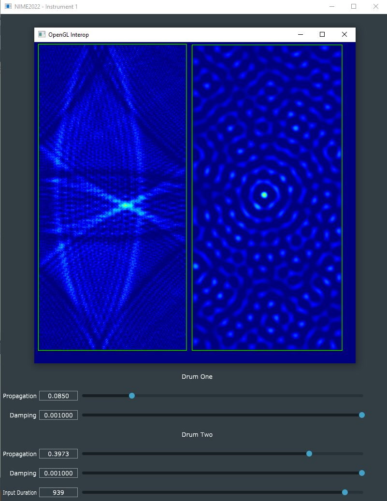
Screenshot of Hyper Drumhead application.

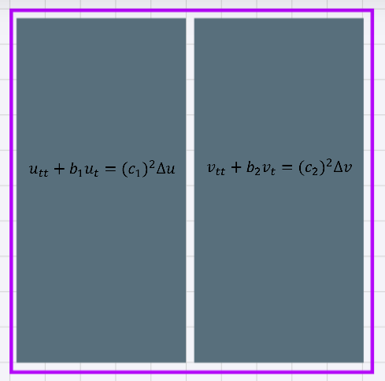
Vector graphics and physical model description for u and v in system a.
The rest of this paper provides details of the HyperModels framework as a design and implementation, including an analysis of how it performs compared to equivalent hand-written GPU simulations. To demonstrate the system in practice, two existing designs based on physical modelling instruments are implemented using HyperModels. The first is the Hyper Drumhead, previously demonstrated by Zappi et al. in hand optimised GPU code [23][29]. The second is a variant of Willemsen et al. hammered dulcimer [21], that originally operated with a plate model of 17x6 points running on the CPU, this has been ported to the GPU using HyperModels to support resolutions up to 256x256. The remaining sections of the paper are structured as follows:
Section Numerical Physical Modelling provides an introduction to numerical physical modelling;
Section GPU Acceleration gives a brief description of the GPU Architecture;
Section HyperModels Framework contains the main contribution of this paper;
Section Performance Evaluation evaluates the performance of the proposed system;
Section Case Studies presents two instruments using HyperModels; and
Section Conclusion closes with final remarks and pointers to future work.
Numerical Physical Modelling
One of the most foundational numerical methods used for approximating derivatives is the finite-difference method. Although it has some drawbacks compared to other methods, such as the difficulties handling curved boundaries [32], it is an effective method for digital audio synthesis and is inherently suited to parallelisation. These numerical methods date back further than the earliest examples of digital audio synthesis, with its origins in engineering and general physics [33]. The adoption and research of numerical methods for sound synthesis have only recently become practical outside of a theoretical context because of the abundance of computational power that is available in modern personal computing devices.
Simple Harmonic Oscillator
The simple harmonic oscillator is one of the core building blocks of digital audio synthesis. A simple harmonic oscillator can also be formed as a physical model using an ordinary differential equation (ODE). An ODE is a differential equation containing one or more functions of one independent variable and the derivatives of those functions [34]. The ODE for the simple harmonic oscillator is:
where state variable describes the displacement of the mass from its equilibrium (in m), =∂t2∂2u is its acceleration and is the angular frequency of oscillation (in rad/s). To solve this using finite differences, the state of the mass as well as the derivatives must be approximated, or discretised. Using , with time index and time step , the simple harmonic oscillator in Equation 1 can be discretised to:
Here, refers to the value of the oscillator at the next timestep . Using values of the current timestep and previous timestep along with the size of the timestep , the value of the oscillator at the next timestep can be computed by rearranging Equation 2 to the following update equation:
By stepping through time and recursively calculating Equation 3, the simple harmonic oscillator is simulated. Image 3 shows that at each timestep, the explicit scheme depends on and to calculate . As depends on the result of , the scheme can only be processed serially by a single processor, as there is only one stream of values to simulate that depend on each other.

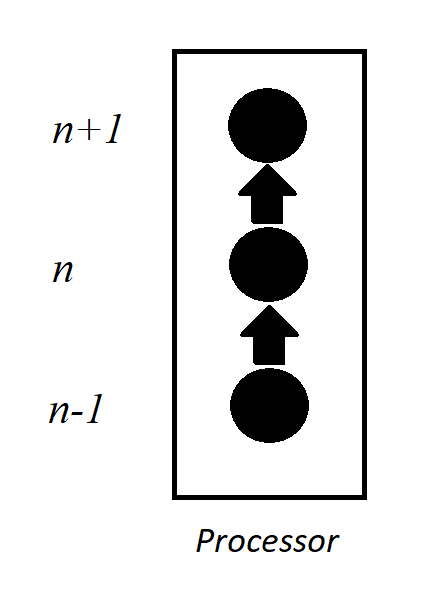
Serial processing of ODE finite-difference schemes.
1D Wave Equation
Partial differential equations (PDE) are an extension to the concept of ODEs, like the simple harmonic oscillator discussed in Equation 1. Where ODEs involved a single independent variable, PDEs involve two or more independent variables [35]. The 1-dimensional wave equation is an example of a partial differential equation:
where state variable is now dependent on time as well as spatial coordinate . Assuming a system of length (in m), the spatial domain becomes . Furthermore, is the wave speed (in m/s).
To approximate Equation 4, one can subdivide the spatial domain into intervals with equal length . The spatial coordinate can then be approximated according to with spatial index . Using the spatial index as well as the temporal index described above, one can define grid function n which is a discrete approximation to .
Approximating and using finite-differences, the following recursively solvable explicit scheme can be formed:
where is the Courant number and needs to abide the condition for the scheme to be stable [36]: . To solve this scheme, the simulation now needs to calculate n+1 not just for one position, but for positions in the model. All of these positions will need to calculate Equation 5 and store the result in n+1 for all positions as shown in Image 4. These calculations do not interfere or depend on each other, making each spatial point for the timestep solvable in parallel. Parallel streams of processing like those found on the GPU can each handle a single grid point and provided is big enough to fully utilize all parallel processors, speed up the calculation of the system for each timestep.

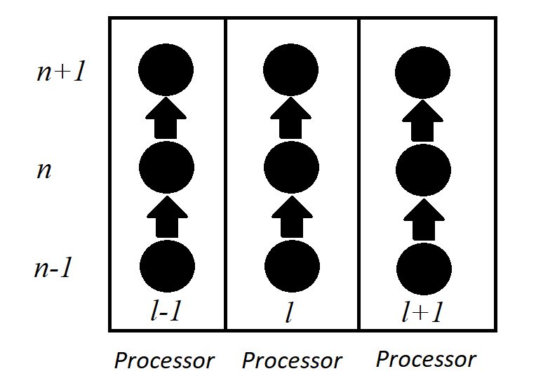
Parallel processing of PDE finite-difference schemes.
2D Wave Equation
One can extend the 1-dimensional wave equation in Equation 4 to 2 dimensions. The 2-dimensional wave equation is defined as
with wave speed (in m/s) and where state variable is defined over two spatial dimensions and .1 For a rectangular system of side lengths (in m) and (in m), where ]×[0,Ly].
Similar to before, Equation 6 this can be discretised using finite differences. Discretising time as usual (), space can be subdivided into intervals in the -direction and intervals in the -direction, yielding and ,2 with } and }. Using these definitions, the state variable can then be approximated using grid function n. Discretising Equation 6 and solving for n+1, yields the following update equation:
where the following stablitlity condition must be satisfied [5]: 1.
GPU Acceleration
Modern computer systems are built as heterogeneous platforms [37], meaning systems utilise different processing devices simultaneously for maximum efficiency. The CPU and its typical 4-14 fast processors [38] are usually reserved for most general processing, while the hundreds of parallel processors on the GPU can be used to offload and accelerate suitable tasks such as graphics. Although the CPU and GPU share many similarities, there are key differences that need to be understood to efficiently target both devices. An abstract view of the modern GPGPU architecture is shown in Figure 5 [39]. Here, the CPU interfaces with the GPU unit across a bridge and a host interface loads instructions and programs onto the GPU [40]. The device then loads the programs across the compute devices; these manage the execution of instructions from the program across their numerous Processing Elements (PE). According to the program instructions, all the PEs then execute the same instructions simultaneously on different sections of data in memory by using the ID of the stream of execution to index into memory. This means that each compute unit supports the single-instruction multiple-data (SIMD) paradigm [41].
The finite-difference methods used in this paper require solving simple linear systems of equations that are entirely independent from one another. Therefore the entire state of the grid can be contained in GPU global memory such that each point on the grid can be accessed and processed concurrently, without any explicit synchronisation or communication between PEs. Further, scaling up the number of points does not impact on this advantage. For example, to calculate a point in space and time requires accessing neighbouring values, but the result of the calculation only requires writing to a single, mutually exclusive location. Therefore, when mapping numerical physical models to the GPU, a core can be allocated to solve each equation at each position in space and write the resulting value to memory without affecting other neighbouring cores. This mapping is the case for models based on linear systems, more sophisticated, non-linear variants can often not be solved as a recursively solvable explicit scheme.

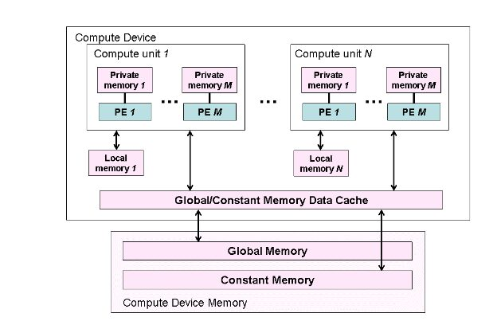
The modern GPU architecture.
HyperModels Framework
The HyperModels framework is outlined in Image 6. There are four distinct software components: physical-model-representation, svg-generator, svg-parser and then a gpu-interface. The physical-model-representation provides the mapping between the finite-difference schemes to parallel processing environment. The vector graphic representation of the physical model geometry is described using an annotated scalable vector graphics (SVG) [42] format in svg-generator. The SVG is then parsed in svg-parser to produce a two-dimensional grid representation of the models that is suitable for the finite-difference schemes. The physical model is captured inside a JSON object that the gpu-interface can load into the GPU and integrated into an application to create an instrument.

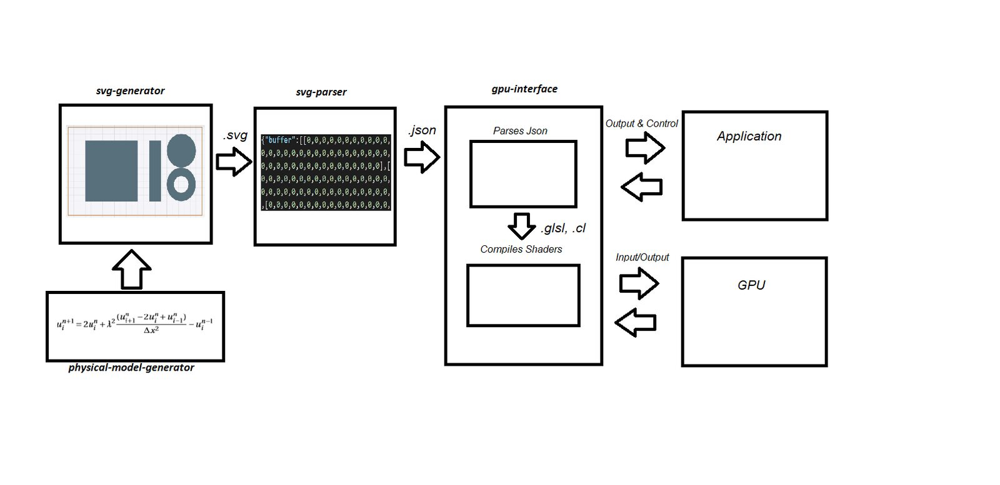
Relationship diagram of the HyperModels GPU physical modelling tools.
Model to GPU Mapping
Mapping finite-difference equations into a parallel processing environment requires defining an appropriate representation and program structure. Here, we define the GPU as system with a grid of ×Cy cores. A single core is denoted by ,cy where ∈{1,...,Cx} and ∈{1,...,Cy} are the core indices in the horizontal and vertical direction of the GPU grid respectively. The update equation of one grid point can then be assigned to a single core, such that these can be executed in parallel. Considering the 2D system presented in Equation 7, mapping a grid point of a scheme with spatial index to a core with index ,cy) is denoted by ,cy⇐vl,m.
The cores of the GPU must then be processed by recursively traversing the two-dimensional system and calculating the values of at each position depending on what models are assigned at each position. This process is repeated recursively and once all of is calculated, time index can be incremented. A serial representation of this process would be formed using two nested for loops:

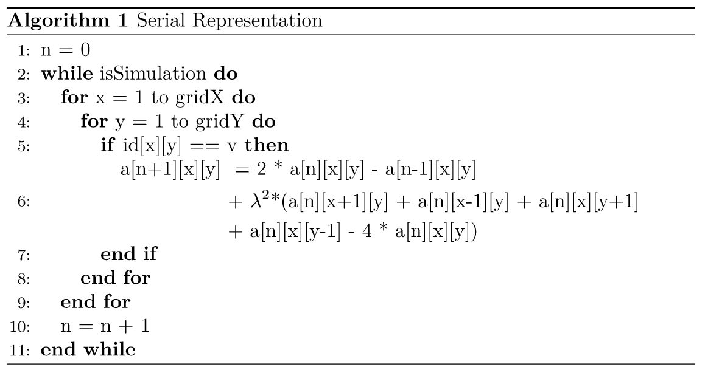
Here, every position in the grid is visited by iterating over all possible values for x and y. These are first used to check if the position in the two-dimensional grid is inside the model . If it is, then Equation 7 is used to calculate the value at ,cyn+1. In the equation, components such as +1,cyn require accessing neighbouring values of the currently considered position at and by adding to x, leading to a[n][x+1][cy]. This is done for all neighbouring values. This serial approach can be rewritten to the following, so that it is suitable for parallel processing:

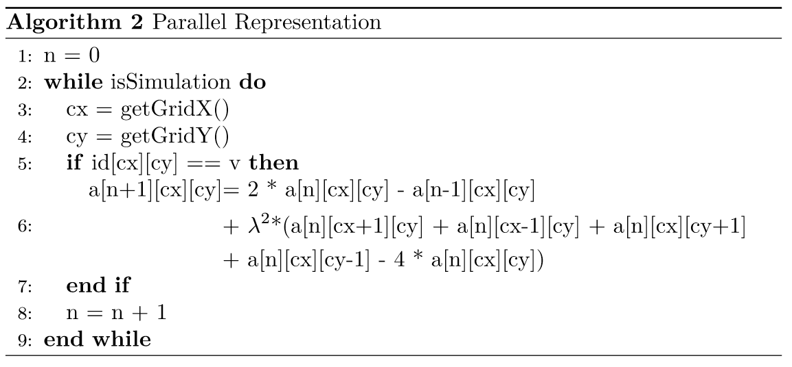
Here the nested for loops are implicit, with the loop’s indices represented through the identifiers getGridX() and getGridY(), respectively, where ×Cy process streams are dispatched to the processor. Thus, instead of iterating over two nested for loops, the ID of each process stream is used to check which model’s equation to use, such as for accessing to calculate the next timestep . The state of the system is contained in global GPU memory as it is only directly accessed once by each PE.
Multiple models can be added to the simulation, where the equation at each position in the system depends on the and coordinates. For example, one can add the 1D wave equation described in Equation 5 as a second model to the GPU. This one-dimensional equation can be mapped into the system according to ,cy⇐ul. The code then includes an additional conditional statement checking if the coordinate ,cy) identifies :

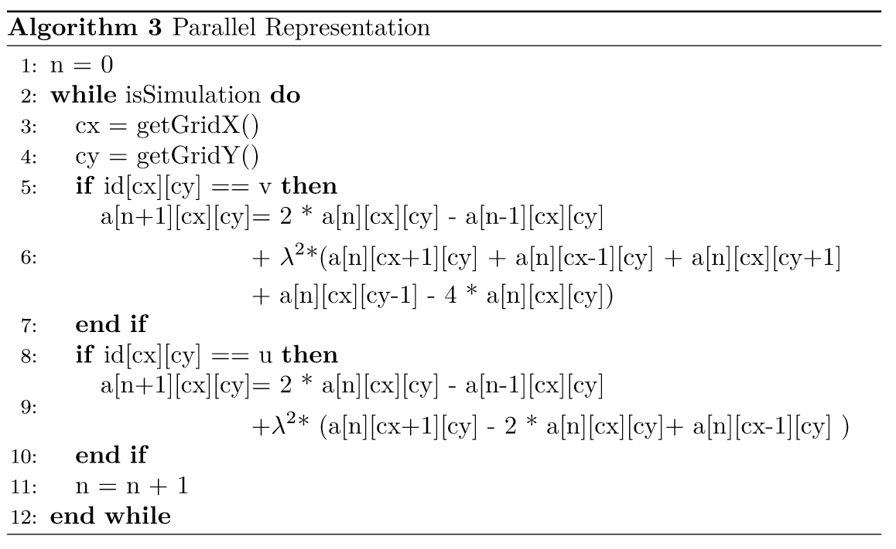
This mapping has been implemented using a domain specific language (DSL) [43] where finite-difference schemes can be defined. The DSL compiler generates a GPU program that captures the parallel representation. The details of this implementation will be covered in future work.
Vector Based Representation
A method for mapping models such as into the system is required for describing the shapes of the models. The SVG format is a compact and extendable vector graphics protocol that supports descriptions of shapes and their properties as XML tags and attribute values. To support the physical models, the standard SVG format is extended to capture important information associated with each shape. An example of an SVG containing a rectangle that includes physical modelling attributes is as follows:
<svg viewbox='0 0 12 8' width='12' height='8'
interface_device='custom' connections=''>
<rect id='1' interface_osc_address='' interface_type='pad'
interface_osc_args=''
width='2' height='10' x='4' y='2'
style='fill:rgb(88,111,124);'
physics_program='...'/>
</svg>Inside the SVG svg tags, the viewbox, width and height describe the resolution of the entire physical modelled environment. Defining these as viewbox=’0 0 12 8’ width=’12’ height=’8’ creates a 12x8 simulation environment. This dictates the possible space to work in and how detailed shapes will be in the simulation. The connections field contains a list of coordinates that are connected together between models. The physics_program contains the generated GPU program from the physical-model-representation stage. Each shape contains two additional attributes, id and physics_program. The id is the unique identifier for each shape, this is used to fill in the id of the shape when generating the 2-dimensional grid in the svg-parser.
Vector Parser
Simulating the physical models using finite-difference based methods requires a Cartisian grid of points to apply calculations to. Therefore, the SVG vector image format must be used to generate a 2-dimensional grid. The design presented here is based on the SVG parser in [44], with modifications making it appropriate for the physical modelling framework. Image 10 covers the stages used by the SVG parser.

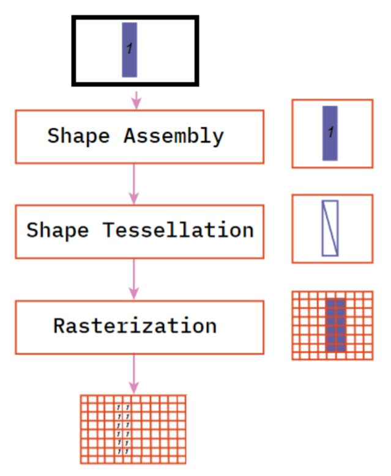
Interface tessellation and rasterization of single rectangle.
First, the SVG description is tessellated, this produces a set of triangles that when considered holistically, form the original shape. These triangles prepare the shape for rasterization, where all points inside the respective shape’s triangles are populated with the ID of the shape. Here, the rect with a height of 10 and width of 2 is tessellated and points inside the triangles are filled with the shape ID inside the 12x8 simulation grid. The output of the parser is then used to populate a JSON object with the following data:
{
"models" : [
{
"id": 1,
"rgb": "rgb(217,137,188)",
"args": [
0.39
]
},
. . .
],
"environment": [
[
0, 0, 0, 0, 0, 0, 0, 0, 0, 0, 0, 0,
0, 0, 1, 1, 1, 0, 0, 0, 0, 0, 0, 0,
0, 0, 1, 1, 1, 0, 0, 0, 0, 0, 0, 0,
0, 0, 1, 1, 1, 0, 0, 0, 0, 0, 0, 0,
0, 0, 1, 1, 1, 0, 0, 0, 0, 0, 0, 0,
0, 0, 1, 1, 1, 0, 0, 0, 0, 0, 0, 0,
0, 0, 1, 1, 1, 0, 0, 0, 0, 0, 0, 0,
0, 0, 0, 0, 0, 0, 0, 0, 0, 0, 0, 0
]
] ,
"physics_program": "...",
"connections": ...
"interface" : "custom"
}Here the Cartisian grid that contains each model’s ID is contained in environment, while a list of models contains details for each model, particularly the id that indicates what equation will be executed for each point inside the GPU physics_program. The connections field contains a list of coordinates that are linked together between models.
GPU Interface
The whole physical model environment captured inside the JSON object can now be used by a GPU interfacing API to load the GPU program, prepare the memory modelling the environment and then execute it to generate audio samples. The following C++ function declarations are used in this implementation:
void createModel(const std::string aPath);
void step();
void fillBuffer(float* input, float* output, uint32_t numSteps);
void updateCoefficient(std::string aCoeff, uint32_t aIndex, float aValue);
void setInputPosition(int aInputs[]);
void setOutputPosition(uint32_t aOutputs);
createModel() takes a file path to the JSON file containing the physical model description. The GPU program for the target GPU interfacing API can then be loaded onto the GPU. step() is a private function that is used for advancing the physical model one timestep. This is used by fillBuffer to recursively advance the physical model and at each time step extract samples from the output position to fill the output buffer. is used to change the value of coefficients. The input and output positions for excitation and sample generation respectively can be moved using setInputPosition() & setoutputPosition().
The performance of this framework is evaluated by profiling an implementation of the HyperModels framework. This will provide details of the frameworks strengths and limitations that will lead into the development of two example instruments.
Performance Evaluation
The convenience provided by automating development is often contrast with a trade-off with performance. This section provides a brief evaluation of the performance by comparing the auto-generated GPU programs from HyperModels with manually developed equivalents. To create a controlled testing environment, only the GPU programs will be modified. This means the interfacing methods and physical model representation will be the same between versions. Further, measurements taken from equivalent parallel CPU versions have been included for comparison.
Comparative Tests
The benchmarking suite operates by following the real-time profiling technique used in [45]. This approach runs a collection of tests through the following template:
void realtimeTest() {
if (isWarmup) {
executeTest();
}
while (numSamplesComputed < sampleRate) {
startTimer();
executeTest();
endTimer();
numSamplesComputed += bufferLength;
checkTestResults(testResults);
}
elapsedTimer();
cleanup(hostVariables, deviceVariables);
}Here, the executeTest function represents the physical modelling synthesis function that generates bufferLength samples. This function is repeatedly called until a seconds worth of samples has been computed at a specified sample rate. This template can then be repeated and the average time to process at the sample rate can be measured. The isWarmup flag is used to execute the test once without measuring performance as the first time a GPU program is executed it can be considerably slower than all subsequent executions as the GPU prepares and optimises on the first execution.
In this evaluation, the test will be considered when processing at the minimum acceptable sample rate of 44100Hz [7]. The tests will be repeated for a series of escalating grid dimension sizes, starting at 64x64 increasing by powers of 2 up to 1024x1024. Four tests have been designed to test the basic functionality of the physical models and reveal contextual differences in performance between the automatic and manually written GPU physical model programs. For conciseness in this paper, only the salient results from two of the tests 3 will be considered in this analysis and are as follows:
Simple Single Model - A single 2-dimensional wave equation square physical model. Utilisation= (Image 11)
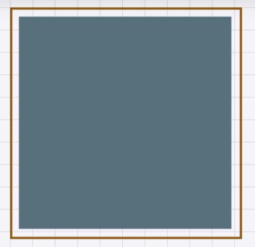
Image 11SVG representation of Simple Single Model model geometry.
Complex Multiple Models - Two 2-dimensional square physical models connected by a single string. Utilisation= (Image 12)
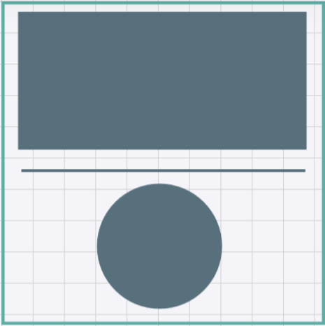
Image 12SVG representation of Complex Multiple Models model geometry.


Manually writing the GPU program provides opportunities for a competent developer to exploit contextual elements using foresight that automated tools either have difficulty identifying or can not safely implement. Some of the optimisations exclusive to the manual version are full constant folding [46] in equations and grouping models with identical equations into one control dependency. Each of these tests have a utilisation measurement shown as a percentage. This is an important feature of each tests as it denotes how intensive the simulation is to process.
Results
The test results for simple single model are shown in Image 13. Considering the GPU auto-generated and manual versions, grid resolutions between =Cy=64 and =Cy=256 appear to show comparatively marginal difference. However, from =Cy>256, the disparity begins to emerge, where the manually written program begins to perform increasingly better. With this projection, the manually written version can operate at higher resolutions up to around =Cy=700, while the auto-generated version reaches =Cy=512. The limited scope of the simple single model test means the only notable optimisation added to the manual version is the constant folding of all redundant calculations. This is where any constant values involved in the equations defined for the model are calculated once on the CPU and uploaded as one constant coefficient to the GPU, instead of redundantly calculating it on the GPU. This optimisation appears effective for this test as it is applied across of the simulated space. Therefore, as expected, optimisations that reduce computation in the model’s scheme are effective.
When considering the performance of the CPU against the CPU, the GPU can support far higher resolution models than the CPU. For this single model test, the manually written CPU version can almost support =Cy=128 which would involve 16384 grid points. The auto-generated GPU version can support =Cy=512 that involves a considerably higher 262144 grid points, 16X more than the CPU can support.

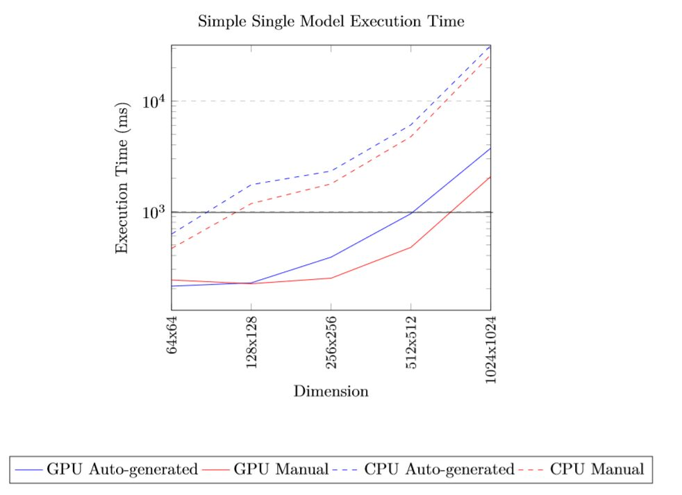
Execution time for a second's worth of sample at 44.1KHz for the simple single model test.
Image 14 displays the results recorded for the Complex Multiple Models test. The results follow a similar trend as the Simple Single Model test, however, the differences between the auto-generated and manual versions are negligible. Both the GPU versions support resolutions up to around =Cy<700. It appears for the test that involves advanced models and connections, the manual optimisations are less effective. This might be partly because the constant folding optimisation is less effective for the smaller grid utilisation of . This test involves two connection points between the three models yet the performance does not appear to be negatively effected by this. This suggests the technique used for the connections in the design is effective, at least for few connection points. However, it can not be assumed to extrapolate as more connections are added, comprehensive experimentation is needed to establish how this scales for hundreds of connections.
The results presented here support the effectiveness of the HyperModels auto-generated programs. For the majority of the tests, the performance difference was a negligible 6% in favour of the GPU manual version over the auto-generated equivalent. Although, under certain contexts the manual version was significantly faster. For example, the manual version of simple single model test at =Cy=700 was 50% faster than the auto-generated program.

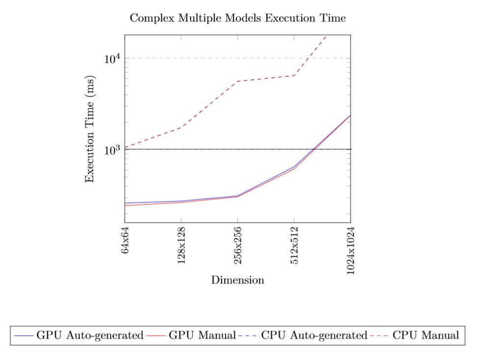
Execution time for a second's worth of sample at 44.1KHz for the complex multiple model test.
Case Studies
Two instruments will be presented here to demonstrate the expressiveness of the HyperModels framework. Both instruments will operate within the system defined in HyperModels that will have a resolution of ,Cy) where models can be defined to operate at specific positions determined by the vector based description of the model shapes.
Instrument 1: Hyper Drumhead
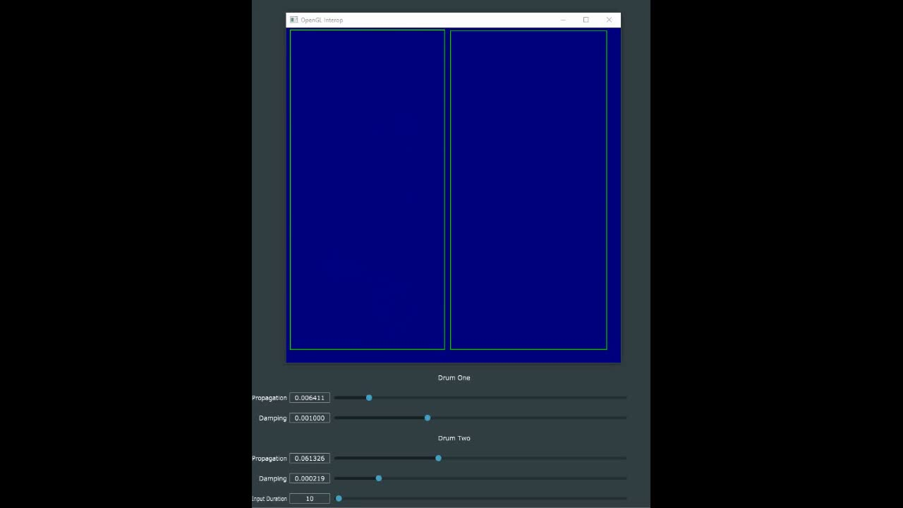
▶Instrument 1: Hyper Drumhead
Instrument 1 implements the Hyper Drumhead physical model from [23] [31]. In their implementation, the Hyper Drumhead is a two-dimensional drumhead simulation that has been accelerated on the GPU using the graphics pipeline. The Hyper Drumhead was reported to support resolutions up to 320x320 for most of the systems tested on. In their implementation, Zappi et al. mapped the audio domain of the physical model directly into the graphical domain using the OpenGL graphics rendering API. By conforming to the graphical domain, this design requires an additional field of knowledge and imposes some limitations. For Instrument 1, the Hyper Drumhead will be ported to the HyperModels framework with an extended resolution of =Cy=512. The source code and recordings of this instrument are publicly available online 4.
The physical model PDE used in the Hyper Drumhead is based on the two-dimensional wave equations with a frequency independent damping component [47]. Equation 5 can be extended to include damping, and the recursively solvable explicit scheme used for the th model where will be defined as:
where the Courant number is defined as in Equation 5, and is the frequency independent damping coefficient (in s). To maintain stability inside the model, the conditions 1 and must be met. The mapping of into the grid of cores in is illustrated as an SVG in Image 2. The physical model described so far is then contained in the instrument component in the application visualised in Image 15. Here, the CPU application program written in the JUCE5 audio framework interfaces with the GPU instrument program requesting 44100 samples per second. However, the input/output samples between CPU and GPU uses a buffering technique. Therefore, data transfers occur at a rate of fs. So for a buffer length =256 at =44100, there are 44100=173Hz data transfers per second. The state of the system stays in the GPU global memory and is not transferred back to the CPU. Instead, for the on-screen visualisation of the model an OpenGL graphics program is called at a rate of 15Hz. This efficiently maps the state of the instrument into coloured pixels that are then sent directly to a display device. Interactions with the instrument are controlled using two Sensel Morphs 6. The Sensel morph is a high-resolution pressure sensor that detects the position and amount of pressure of contacts. The two Sensel morph’s have been connected to the application, one mapping to model and the other to by adding excitation to the system ,cy at a position and that is detected by the Sensels. The sensel’s are polled for contacts at a rate of 150Hz as this provides a maximum detection latency of 6.6ms [21]. A screenshot of Instrument 1’s application GUI is shown in Image 1.

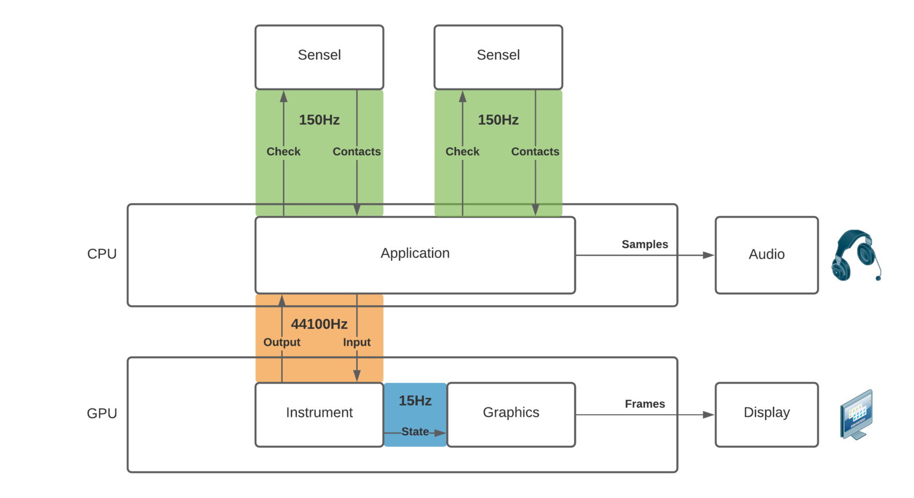
Application overview for Instrument 1: Hyper Drumhead.
Instrument 2: String-Plate Connections
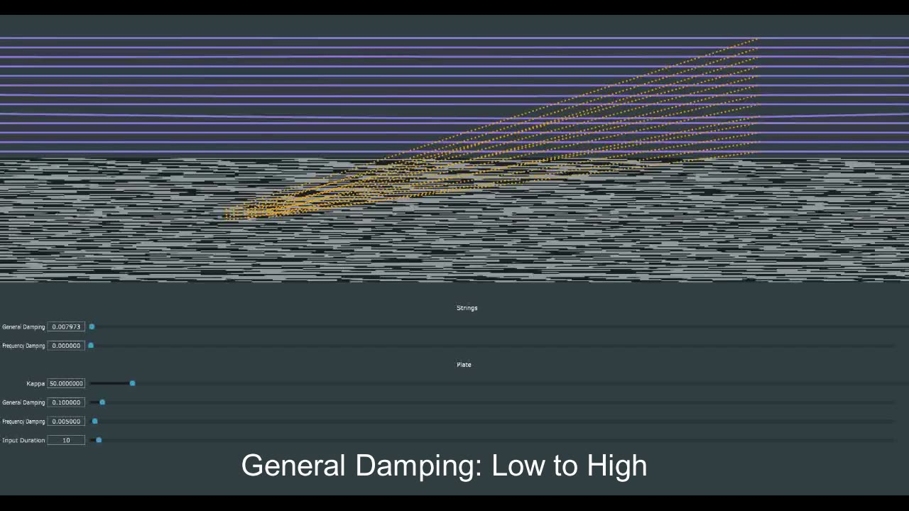
▶Instrument 2: String-Plate Connections
Instrument 2 aims to demonstrate that complex, interconnected models can be represented by the GPU accelerated framework. In [21], Willemsen et al. design instruments using strings and plate models that are connected together to form instruments such as the sitar, hammered dulcimer and Hurdy Gurdy. In their implementation, the instruments were executed on the CPU and operated for small resolutions, with strings involving a maximum of 50 points and plates of 20x10. The GPU accelerated implementation will support higher resolution models with multiple strings of 280 points and a plate of 236x121 inside an environment with =Cy=256. A plate model and multiple strings will be defined where the subscript is used to identify each string between .

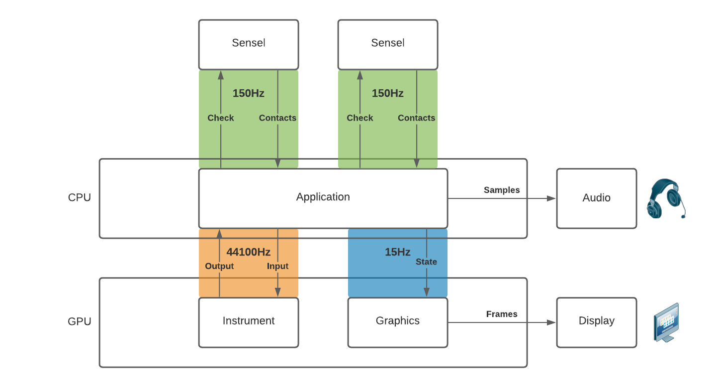
Application overview for Instrument 2: String-Plate Connections application.
The string models are defined as using the stiff string equation [48] along with frequency independent and frequency dependant components [49]. Using finite-differences, the recursively solvable explicit form n is formed:
with =X2κqT, stiffness coefficient , frequency independent damping and frequency dependant damping .
The linear plate equation [50] uses a similar description of physics as the stiff string including frequency independent and dependant components, but is extended to operate across two-dimensions. By discretising the equation using finite-differences, the following recursively solvable explicit scheme is formed.
Where parameters are the same as in Equation 9 but with the additional coefficient 2σ1T.
The geometry for instrument 2 is displayed in the SVG in Image 18. Again, a JUCE application running on the CPU interfaces with the instrument on the GPU at a samplerate of 44100Hz as shown in the instrument overview in Image 16. The Sensel Morphs are used as input, one being mapped to pluck across the strings and the other to strike the plate . The key difference in this arrangement is that the visualisation of the instrument is processed on the CPU using the JUCE framework. Therefore, the state of the grid must be transferred from the GPU to the CPU to update the JUCE graphical components to then load onto the GPU at a frame rate of 15Hz. A screenshot of the Instrument 2 application is shown in Image 17 and the recordings and source code are available online 7.

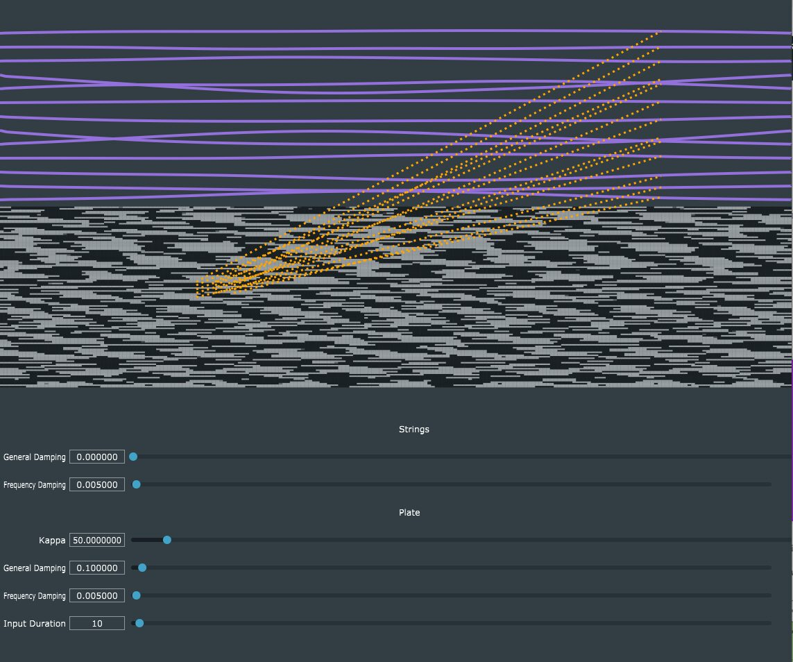
Screenshot of Plate-String Connections application.

Vector graphics and physical model description for uq and v in system a.
Conclusion
This paper has presented an overview of the HyperModels framework for assisting the development of GPU accelerated physical model synthesisers. The performance of HyperModels has been evaluated and shown to outperform CPU versions for resolutions above 64x64, particularly at 512x512 where the auto-generated GPU code was approximately 4X faster than the manually written parallel CPU version. However, the manually written GPU code was consistently faster than the auto-generated equivalent, being around 6% slower for most tests and a maximum of 50% for a particular case. The design for HyperModels is still relatively restricted to support linear systems that can be simulated using recursively solvable explicit schemes. These linear systems although highly suited for parallel processing and meeting real-time requirements, are fundamentally limited. However, the framework could be extended to support certain non-linear systems using iterative methods such as Newton Raphson method [11]. Other future work involves optimising the HyperModels implementation further to match the manual program performance and to present the comprehensive technical details of the entire framework.
Acknowledgments
This work was supported by a grant from the HSA Foundation and the UWE 50-50 PhD fund and has been funded in part by the European Art-Science-Technology Network for Digital Creativity (EASTN-DC), project number 883023.
Ethics Statement
Being a technical paper that presents software designs, the research and contents of this paper involves no ethical considerations and/or implications.
Footnotes
Notice that we use state variable v here (instead of u) for consistency with later sections.
↩We assume the same grid spacing in the x and y-direction.
↩The source-code for the benchmarking suite used along with all recorded results are available online: https://github.com/Harri-Renney/HyperModels-benchmarking-suite
↩- ↩
- ↩
- ↩
- ↩
Citations
- ↩Bristow-Johnson, R. (1996). Wavetable synthesis 101, a fundamental perspective. Audio Engineering Society Convention 101.
- ↩Chowning, J., & Bristow, D. (1986). FM theory and applications. By Musicians for Musicians.
- ↩Smith, J. (1997). Acoustic modeling using digital waveguides. Musical Signal Processing, 7, 221–264.
- ↩Tolonen, T., Välimäki, V., & Karjalainen, M. (1998). Evaluation of modern sound synthesis methods. Helsinki University of Technology.
- ↩Bilbao, S. D. (2009). Numerical sound synthesis. Wiley Online Library.
- ↩Berg, R. E., & Stork, D. G. (1990). The physics of sound. Pearson Education India.
- ↩Lavry, D. (2004). Sampling theory for digital audio. Lavry Engineering, Inc. Available Online: Http://Www. Lavryengineering. Com/Documents/Sampling_Theory. Pdf (Checked 24.5. 2010).
- ↩Jack, R. H., Mehrabi, A., Stockman, T., & McPherson, A. (2018). Action-sound latency and the perceived quality of digital musical instruments: Comparing professional percussionists and amateur musicians. Music Perception: An Interdisciplinary Journal, 36(1), 109–128.
- ↩Webb, C. J., & Bilbao, S. (2015). On the limits of real-time physical modelling synthesis with a modular environment. Proceedings of the International Conference on Digital Audio Effects, 65.
- ↩NESS. (2019). Faustmanual. https://www.ness.music.ed.ac.uk/project; The University of Edinburgh.
- ↩Bilbao, S., Perry, J., Graham, P., Gray, A., Kavoussanakis, K., Delap, G., Mudd, T., Sassoon, G., Wishart, T., & Young, S. (2019). Large-scale physical modeling synthesis, parallel computing, and musical experimentation: The NESS project in practice. Computer Music Journal, 43(2–3), 31–47.
- ↩Hsu, B., & Sosnick-Pérez, M. (2013). Realtime GPU audio: Finite difference-based sound synthesis using graphics processors. Queue, 11(4), 40–55.
- ↩Bilbao, S., & Webb, C. (2012). Timpani drum synthesis in 3D on GPGPUs. Proc. Of the 15th Int. Conference on Digital Audio Effects (DAFx-12), York, United Kingdom.
- ↩Hamilton, B., & Webb, C. J. (2013). Room acoustics modelling using GPU-accelerated finite difference and finite volume methods on a face-centered cubic grid. Proc. Digital Audio Effects (DAFx), Maynooth, Ireland, 336–343.
- ↩Bilbao, S., Hamilton, B., Torin, A., Webb, C., Graham, P., Gray, A., Kavoussanakis, K., & Perry, J. (2013). Large scale physical modeling sound synthesis. Proceedings of the Stockholm Music Acoustic Conference (SMAC2013), Stockholm, 593–600.
- ↩Bilbao, S., Torin, A., Graham, P., Perry, J., & Delap, G. (2014). Modular physical modeling synthesis environments on GPU. ICMC.
- ↩Willemsen, S., Bilbao, S., Ducceschi, M., & Serafin, S. (2021). A physical model of the trombone using dynamic grids for finite-difference schemes. In G. Evangelista & N. Holighaus (Eds.), Proceedings of the 24th international conference on digital audio effects DAFx20in21 (Vol. 2, pp. 152–159).
- ↩Willemsen, S., Serafin, S., Bilbao, S., & Ducceschi, M. (2020). Real-time implementation of a physical model of the tromba marina. 17th Sound and Music Computing Conference, 161–168.
- ↩Willemsen, S., Bilbao, S., & Serafin, S. (2019). Real-time implementation of an elasto-plastic friction model applied to stiff strings using finite difference schemes. 22nd International Conference on Digital Audio Effects.
- ↩Onofrei, M. G., Willemsen, S., & Serafin, S. (2021). Real-time implementation of a friction drum inspired instrument using finite difference schemes. In G. Evangelista & N. Holighaus (Eds.), Proceedings of the 24th international conference on digital audio effects (DAFx20in21) (Vol. 2, pp. 168–175). https://dafx2020.mdw.ac.at/
- ↩Willemsen, S., Andersson, N. S., Serafin, S., & Bilbao, S. (2019). Real-time control of large-scale modular physical models using the sensel morph. 16th Sound and Music Computing Conference, 151–158.
- ↩Thibault, A. (2019). Wind instrument sound synthesis through physical modeling [Phdthesis]. ENS Paris-Ecole Normale Supérieure de Paris; Sorbonne Université; Inria.
- ↩Zappi, V., Allen, A., & Fels, S. S. (2017). Shader-based physical modelling for the design of massive digital musical instruments. NIME, 145–150.
- ↩zappi. (2019). Drumhead synthesizer. https://www.youtube.com/watch?v=_qLwJC4PYR0; _Vic_.
- ↩Blythe, D. (2008). Rise of the graphics processor. Proceedings of the IEEE, 96(5), 761–778. https://doi.org/10.1109/JPROC.2008.917718
- ↩Rapaport, D. C. (2020). GPU molecular dynamics: Algorithms and performance. arXiv: Computational Physics.
- ↩Desell, T., Waters, A., Magdon-Ismail, M., Szymanski, B. K., Varela, C. A., Newby, M., Newberg, H., Przystawik, A., & Anderson, D. (2010). Accelerating the MilkyWay@home volunteer computing project with GPUs. In R. Wyrzykowski, J. Dongarra, K. Karczewski, & J. Wasniewski (Eds.), Parallel processing and applied mathematics (pp. 276–288). Springer Berlin Heidelberg.
- ↩Ilgner, R. G. (2013). A comparative analysis of the performance and deployment overhead of parallelized finite difference time domain (FDTD) algorithms on a selection of high performance multiprocessor computing systems [Phdthesis]. Stellenbosch: Stellenbosch University.
- ↩Renney, H., Gaster, B. R., & Mitchell, T. (2019). OpenCL vs: Accelerated finite-difference digital synthesis. Proceedings of the International Workshop on OpenCL, 1–11.
- ↩Cook, P. R. (1993). SPASM, a real-time vocal tract physical model controller; and singer, the companion software synthesis system. Computer Music Journal, 17(1), 30–44.
- ↩Zappi, V. (2017). The hyper drumhead: Making music with a massive real-time physical model. Ann Arbor, MI: Michigan Publishing, University of Michigan Library.
- ↩Zappi, V., Allen, A., & Fels, S. S. (2017). Shader-based physical modelling for the design of massive digital musical instruments. NIME, 145–150.
- ↩Renney, H., Gaster, B. R., & Mitchell, T. (2019). OpenCL vs: Accelerated finite-difference digital synthesis. Proceedings of the International Workshop on OpenCL, 1–11.
- ↩Willemsen, S., Andersson, N. S., Serafin, S., & Bilbao, S. (2019). Real-time control of large-scale modular physical models using the sensel morph. 16th Sound and Music Computing Conference, 151–158.
- ↩Reddy, J. N., & Gartling, D. K. (2010). The finite element method in heat transfer and fluid dynamics. CRC press.
- ↩Courant, R., Friedrichs, K., & Lewy, H. (1967). On the partial difference equations of mathematical physics. IBM Journal of Research and Development, 11(2), 215–234.
- ↩Butcher, J. C., & Goodwin, N. (2008). Numerical methods for ordinary differential equations (Vol. 2). Wiley Online Library.
- ↩Evans, G., Blackledge, J., & Yardley, P. (2012). Numerical methods for partial differential equations. Springer Science & Business Media.
- ↩Courant, R., Friedrichs, K., & Lewy, H. (1928). Über die partiellen differenzengleichungen de mathematischen physik. Mathematische Annalen, 100, 32–74.
- ↩Bilbao, S. D. (2009). Numerical sound synthesis. Wiley Online Library.
- ↩Terzo, O., Djemame, K., Scionti, A., & Pezuela, C. (2019). Heterogeneous computing architectures: Challenges and vision. CRC Press.
- ↩Turley, J. (2014). Introduction to Intel® Architecture [Techreport]. Intel.
- ↩Weber, T. (2014). Micropolygon rendering on the GPU [Phdthesis].
- ↩Nickolls, J., & Dally, W. J. (2010). The GPU computing era. IEEE Micro, 30(2), 56–69.
- ↩Corporation, N. (2009). NVIDIA fermi compute architecture whitepaper.
- ↩Eisenberg, J. D., & Bellamy-Royds, A. (2014). SVG essentials: Producing scalable vector graphics with XML. “ O’Reilly Media, Inc.”
- ↩Sakakibara, Y. (1992). Efficient learning of context-free grammars from positive structural examples. Information and Computation, 97(1), 23–60.
- ↩Gaster, B. R., Renney, N., & Parraman, C. (2019). Fun with interfaces (SVG interfaces for musical expression). Proceedings of the 7th ACM SIGPLAN International Workshop on Functional Art, Music, Modeling, and Design, 25–36. https://doi.org/10.1145/3331543.3342579
- ↩Renney, H., Gaster, B. R., & Mitchell, T. J. (n.d.). There and back again: The practicality of GPU accelerated digital audio.
- ↩Lavry, D. (2004). Sampling theory for digital audio. Lavry Engineering, Inc. Available Online: Http://Www. Lavryengineering. Com/Documents/Sampling_Theory. Pdf (Checked 24.5. 2010).
- ↩Muchnick, S., & others. (1997). Advanced compiler design implementation. Morgan kaufmann.
- ↩Zappi, V., Allen, A., & Fels, S. S. (2017). Shader-based physical modelling for the design of massive digital musical instruments. NIME, 145–150.
- ↩Zappi, V. (2017). The hyper drumhead: Making music with a massive real-time physical model. Ann Arbor, MI: Michigan Publishing, University of Michigan Library.
- ↩Renardy, M., & Rogers, R. C. (2006). An introduction to partial differential equations (Vol. 13). Springer Science & Business Media.
- ↩Willemsen, S., Andersson, N. S., Serafin, S., & Bilbao, S. (2019). Real-time control of large-scale modular physical models using the sensel morph. 16th Sound and Music Computing Conference, 151–158.
- ↩Willemsen, S., Andersson, N. S., Serafin, S., & Bilbao, S. (2019). Real-time control of large-scale modular physical models using the sensel morph. 16th Sound and Music Computing Conference, 151–158.
- ↩Willemsen, S. (2021). The emulated ensemble: Real-time simulation of musical instruments using finite-difference time-domain methods [Phdthesis]. Aalborg University Copenhagen.
- ↩Bensa, J., Bilbao, S., Kronland-Martinet, R., & Smith III, J. O. (2003). The simulation of piano string vibration: From physical models to finite difference schemes and digital waveguides. The Journal of the Acoustical Society of America, 114(2), 1095–1107.
- ↩Morse, P. M., & Ingard, K. U. (1986). Theoretical acoustics. Princeton university press.
- ↩Bilbao, S., Perry, J., Graham, P., Gray, A., Kavoussanakis, K., Delap, G., Mudd, T., Sassoon, G., Wishart, T., & Young, S. (2019). Large-scale physical modeling synthesis, parallel computing, and musical experimentation: The NESS project in practice. Computer Music Journal, 43(2–3), 31–47.